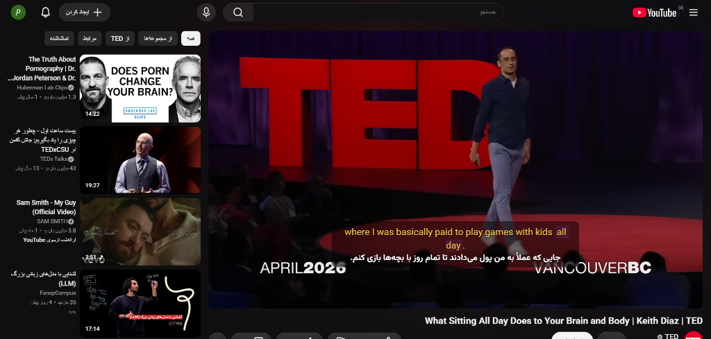
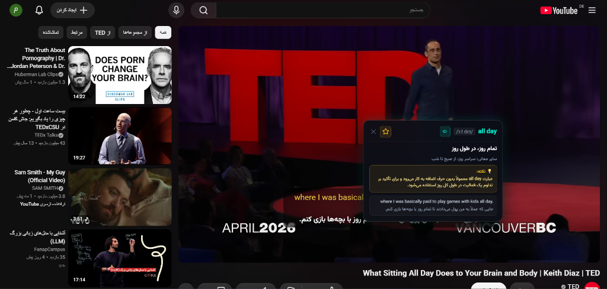

دیگر هیچ ویدیوی آموزشی، تدتاک یا پادکستی را به خاطر زبان از دست ندهید. نمایش همزمان زیرنویس انگلیسی و ترجمه روان فارسی، با امکان کلیک روی کلمات برای دریافت تلفظ و توضیح هوش مصنوعی در همان لحظه!

دیگر نیازی به متوقف کردن ویدیو، باز کردن گوگل ترنسلیت و جستجوی کلمات ندارید. همه چیز روی صفحه به صورت زنده اتفاق میافتد.
"Where I was basically paid to play games with kids all day..."
ترجمه ماشینی نامفهوم یا بدون زیرنویس فارسی
Where I was basically paid to play games with kids all day .
«جایی که عملاً به من پول میدادند تا تمام روز با بچهها بازی کنم.»

دیگر نیازی به باز کردن دیکشنریهای مجزا یا توقف ویدیو نیست. با کلیک روی هر کلمه در خط زیرنویس، پنجره تحلیل هوشمند با امکانات زیر ظاهر میشود:
شنیدن فوری تلفظ با لهجه بومی استاندارد به همراه علائم فونتیک بینالمللی برای یادگیری نحوه ادای صحیح کلمه.
تشخیص هوشمند بهترین معنی متناسب با مفهوم کلی جمله و موضوع ویدیو به جای نمایش لیست معانی گیجکننده دیکشنریها.
تحلیل هوشمند قواعد دستوری، اصطلاحات عامیانه (Slang & Idioms) و دلیل دقیق استفاده از این عبارت در مکالمه ویدیو.
طراحی شده با مدرنترین فناوریهای هوش مصنوعی برای درک عمیق ویدیوها با بیشترین سرعت.
روی هر کلمهای در زیرنویس کلیک کنید تا بلافاصله پنجره هوشمند باز شود؛ شامل تلفظ صوتی با فونتیک، ترجمه دقیق در همان جمله، و نکات کاربردی و گرامری هوش مصنوعی درباره مفهوم کلمه در بافت ویدیو.
متن اصلی انگلیسی در بالا و ترجمه فارسی در زیر آن با تفکیک رنگی جذاب نمایش داده میشود. بهترین روش علمی برای یادگیری واژگان جدید و تقویت مهارت شنیداری بدون خستگی ذهن.
مجهز به موتورهای پیشرفته هوش مصنوعی برای درک اصطلاحات تخصصی، اسلنگها، ضربالمثلها و لهجههای مختلف با طبیعیترین و روانترین لحن فارسی، بدون خطاهای ترجمه ماشینی سنتی.
اندازه فونت، رنگ متن انگلیسی و فارسی، میزان شفافیت پسزمینه و جایگاه زیرنویس را مطابق میل خود شخصیسازی کنید؛ تا مطالعه زیرنویس برای چشمان شما کاملاً لذتبخش و راحت باشد.
بدون نیاز به ثبتنام یا تنظیمات پیچیده، در کمتر از یک دقیقه آماده استفاده شوید:
روی دکمه دانلود کلیک کرده و با یک کلیک افزونه را به مرورگر Google Chrome خود اضافه کنید.
وارد یوتیوب شوید و هر ویدیوی انگلیسی یا زبان دیگر را پلی کنید؛ افزونه آماده کار خواهد بود.
دکمه زیرنویس یوتیوب را فعال کنید تا خط دوزبانه با ترجمه هوش مصنوعی بلافاصله نمایان شود.
ما به حریم خصوصی شما احترام میگذاریم. این افزونه بر اساس استانداردهای سختگیرانه امنیتی Chrome Extension Manifest V3 طراحی شده است.
«این افزونه هیچگونه اطلاعات هویتی، سابقه مرور، پسورد یا کلیدهای API شما را در هیچ سرور خارجی ذخیره یا ارسال نمیکند. کلیه عملیات پردازش و نمایش به صورت کاملاً امن و محلی (Local) درون مرورگر شما انجام میگیرد.»
تمام آنچه برای شروع نیاز دارید بدانید
به جمع صدها کاربری بپیوندید که زبان انگلیسی را روزانه با لذت و ویدیوهای مورد علاقه خود یاد میگیرند.
نصب رایگان روی کروم (کمتر از ۱۰ ثانیه)به عنوان یک برنامهنویس، همیشه برای تماشای ویدیوهای آموزشی با چالش زبان مواجه بودم. تصمیم گرفتم ابزاری بسازم که نه تنها ترجمه سریع و دقیقی ارائه دهد، بلکه محدودیتها را دور بزند تا همه بتوانند بدون مرز یاد بگیرند. این افزونه نتیجه این دغدغه شخصی است.